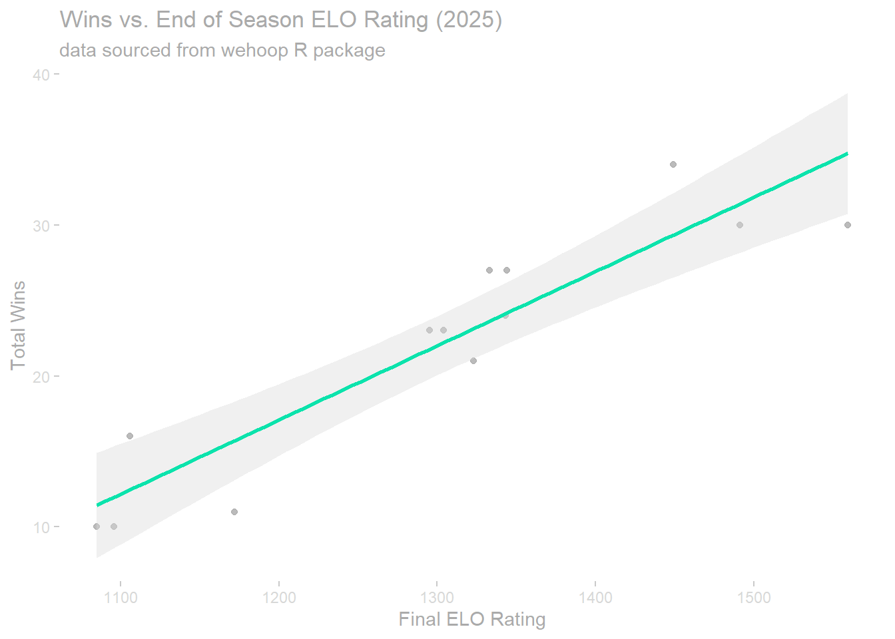
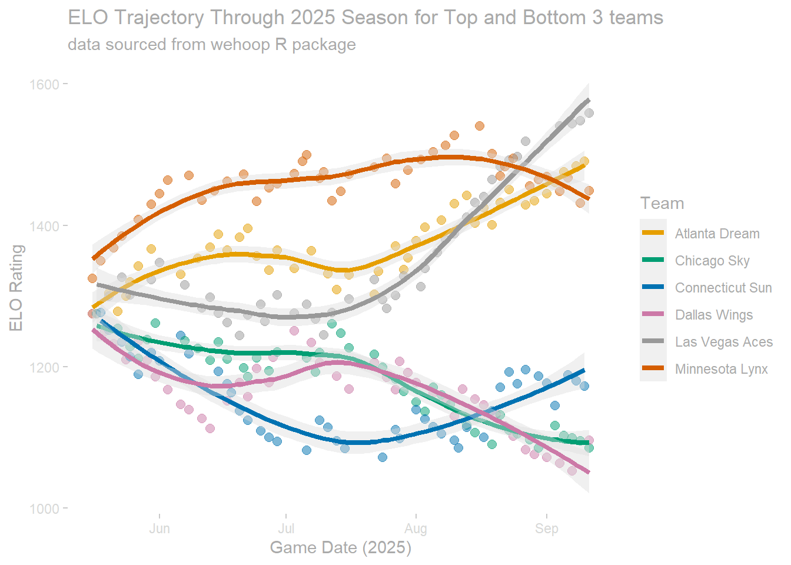
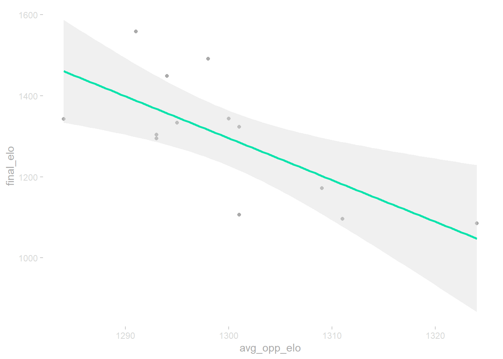

box <- wehoop::load_wnba_team_box(2025)DATA 607 - Project 1 - WNBA ELO Ratings
Introduction and Overview
In this project, the ELO rating methodology, which was developed to rank Chess players by Arpad Elo, will be applied to WNBA teams. Data will be sourced from the wehoop R package (https://wehoop.sportsdataverse.org/). A convention established by the fivethirtyeight blog, and repeated in this article (https://nicidob.github.io/nba_elo/) applying ELO ratings to NBA teams, is to start with a baseline value of 1300 for each team.
Anticipated challenges involve maintaining a reasonable scale: WNBA data exists extending back to 1997, and computing 29 seasons of ELO ratings may prove cumbersome if an efficient and repeatable architecture is not implemented from the start. The 2025 season will be used as a baseline from which the methods can be extended backward to cover the entire WNBA history, if practical. Other anticipated challenges may arise when visualizing the results of this analysis. A potential graph could compare ELO ratings vs time for a select group of teams.
Adaptation
The original project assignment, related to a chess tournament, asked for specific outputs in a .csv file (e.g. player name, player state, total number of points, player pre-rating, and average opponent rating). For this adapted project, the output .csv file will contain columns for: team name, total wins, final ELO rating, and opponents’ average ELO rating.
Codebase
Importing Data from wehoop
To maintain the reduced scope of analyzing only the 2025 season, a request through the wehoop R package is made for team-level box-score data in 2025.
Tidying and Pruning Data
The data frame has clean naming conventions applied via the janitor package’s clean_names() function. Then only the relevant columns are selected, omitting superfluous columns that are not meaningful in this methodology.
box <- janitor::clean_names(box)
df <- box |>
select(game_id,
season_type,
game_date,
game_date_time,
team_id,
team_display_name,
team_home_away,
team_winner,
opponent_team_id,
opponent_team_display_name) |>
group_by(game_id, team_id) |>
filter(season_type == 2) |> #only regular season games, no preseason
arrange(game_date_time)The data frame is split into two frames: one for away teams and the other for home teams.
away_df <- df |>
filter(team_home_away == "away") |>
select(game_id,
game_date,
away_team_id = team_id,
away_team_display_name = team_display_name,
away_team_winner = team_winner
)
home_df <- df |>
filter(team_home_away == "home") |>
select(game_id,
home_team_id = team_id,
home_team_display_name = team_display_name,
home_team_winner = team_winner
)The two split data frames are then rejoined around a common game_id key. Inspecting the results revealed that “TEAM CLARK” and “TEAM COLLIER” are present in the home team display names and away team display names, respectively. This likely represents the All-Star Game match-up, and this game can be removed from the data frame by filtering in all teams with display names that are neither “TEAM CLARK” nor “TEAM COLLIER”. The success of this step is confirmed via the unique() function.
In an initial run of this pipeline, two teams finished the season with 45 games played, compared to the overwhelming mode of 44 total games played. The Minnesota Lynx and the Indiana Fever had an extra game compared to other teams. No duplicate game ids were found. Instead, a data discrepancy in the ESPN source data was identified: a Commissioner’s Cup game (specifically the championship game betwen the Minnesota Lynx and Indian Fever) was included in the regular season data set. This game was removed from the data frame by filtering in all games with a game_id not equal to that game’s game_id.
full_df <- inner_join(away_df, home_df, by = "game_id") |>
mutate(home_win = if_else(home_team_winner == TRUE, 1, 0)) |>
select(game_id,
game_date,
home_team_id,
home_team_display_name,
away_team_id,
away_team_display_name,
home_win
)
home_teams <- unique(full_df$home_team_display_name)
# TEAM CLARK present
away_teams <- unique(full_df$away_team_display_name)
# TEAM COLLIER present
full_df <- full_df |>
filter(away_team_display_name != "TEAM COLLIER",
home_team_display_name != "TEAM CLARK",
game_id != 401736430 # Exclude Commissioner's Cup Championship Game
)
home_teams <- unique(full_df$home_team_display_name)
# TEAM CLARK removed
away_teams <- unique(full_df$away_team_display_name)
# TEAM COLLIER removedCalculating Running ELO Ratings
A running ELO rating is calculated using the ELO R package with documentation here: https://cran.r-project.org/web/packages/elo/index.html. The elo.run() function will be used, which is documented in this specific vignette: https://cran.r-project.org/web/packages/elo/vignettes/running_elos.html.
K <- as.integer(50)
default_elo <- as.integer(1300)
elo_run <- elo.run(
formula = home_win ~ home_team_display_name + away_team_display_name,
data = full_df,
k = K,
initial.elos = default_elo
)
elo_results <- as.data.frame(elo_run)Tidying ELO Results
full_elo_df <- bind_cols(full_df, elo_results)
#view(full_elo_df)
full_elo_df <- full_elo_df |>
mutate(
home_elo_pre =elo.A - update.A,
away_elo_pre = elo.B - update.B,
home_elo_post = elo.A,
away_elo_post = elo.B
) |>
ungroup()
full_elo_df <-full_elo_df |>
select(game_date,
home_team_display_name,
away_team_display_name,
home_elo_pre,
home_elo_post,
home_win,
away_elo_pre,
away_elo_post
)home_team_df <- full_elo_df |>
select(game_date,
team = home_team_display_name,
opp_team = away_team_display_name,
win = home_win,
team_elo_pre = home_elo_pre,
team_elo_post = home_elo_post,
opp_elo_pre = away_elo_pre
)
away_team_df <- full_elo_df |>
mutate(away_win = 1-home_win) |>
select(game_date,
team = away_team_display_name,
opp_team = home_team_display_name,
win = away_win,
team_elo_pre = away_elo_pre,
team_elo_post = away_elo_post,
opp_elo_pre = home_elo_pre
)
all_teams_df <- bind_rows(home_team_df, away_team_df) |>
arrange(team, game_date)Summarizing Season Results
summary_2025 <- all_teams_df |>
group_by(team) |>
summarize(total_games = n(),
total_wins = sum(win),
total_losses = total_games - total_wins, #not independent column| nice for viz
final_elo = round(last(team_elo_post),0),
avg_opp_elo = round(mean(opp_elo_pre),0)
) |>
arrange(desc(total_wins))
top_3_df <- head(summary_2025,3) # top 3 teams summary
bottom_3_df <- tail(summary_2025,3) # bottom 3 teams summary
ext_6_df <- bind_rows(top_3_df, bottom_3_df) #combine into 6 team divergent summaryVisualizing Season Results
summary_2025 |>
ggplot(aes(x=final_elo, y=total_wins)) +
geom_point(alpha = 0.8, show.legend = FALSE) +
geom_smooth(formula = 'y ~ x', method = lm, se = TRUE) +
labs(title="Wins vs. End of Season ELO Rating (2025)",
subtitle = "data sourced from wehoop R package",
y = "Total Wins",
x = "Final ELO Rating"
)
notes to fix above graphic:
add in labels via geom_label and chr vector of labels for team names
labs()
ext_6_names <- unique(ext_6_df$team)
ext_6_game_df <- all_teams_df |>
filter(team %in% ext_6_names) |>
group_by(team) |>
arrange(game_date) |>
mutate(pt_size = sum(win)/(n()))
ext_6_game_df |>
ggplot(aes(x=game_date, y=team_elo_post, color = team)) +
geom_point(alpha = 0.5, show.legend = FALSE, size = 2.5) +
geom_smooth(method = 'loess', formula = 'y~x', show.legend = TRUE, linewidth = 1.5) +
labs(title = "ELO Trajectory Through 2025 Season for Top and Bottom 3 teams", subtitle = "data sourced from wehoop R package", y= "ELO Rating", x= "Game Date (2025)", color = "Team")
notes to fix above graphic:
consider adding legend for team name
labs()
summary_2025 |>
ggplot(aes(x=avg_opp_elo, y=total_losses)) +
geom_point(alpha=0.8, show.legend = FALSE) +
geom_smooth(method = 'lm', formula = 'y ~ x', show.legend = FALSE)
notes to fix above graphic:
- labs()
#GOAL: show rel bw avg-opp-elo and final-elo
summary_2025 |>
ggplot(aes(x=avg_opp_elo, y=final_elo)) +
geom_point(show.legend = FALSE) +
geom_smooth(method = 'lm', formula = 'y ~ x', se = TRUE, show.legend = FALSE)
notes to fix above graphic:
add in labels via geom_label and chr vector of labels for team names
labs()
Exporting to csv
The summary_2025 data frame can be exported as a csv file using the readr package’s write_csv() function. The CSV can be validated by re-importing it as a new data frame and knitting a table to display the CSV file’s contents.
write_csv(summary_2025, "wnba_elo_summary_2025.csv")
check_df <- read_csv("wnba_elo_summary_2025.csv")
knitr::kable(check_df, caption = "Validated 2025 WNBA Elo Summary Output")| team | total_games | total_wins | total_losses | final_elo | avg_opp_elo |
|---|---|---|---|---|---|
| Minnesota Lynx | 44 | 34 | 10 | 1449 | 1294 |
| Atlanta Dream | 44 | 30 | 14 | 1491 | 1298 |
| Las Vegas Aces | 44 | 30 | 14 | 1559 | 1291 |
| New York Liberty | 44 | 27 | 17 | 1344 | 1300 |
| Phoenix Mercury | 44 | 27 | 17 | 1333 | 1295 |
| Indiana Fever | 44 | 24 | 20 | 1343 | 1284 |
| Golden State Valkyries | 44 | 23 | 21 | 1304 | 1293 |
| Seattle Storm | 44 | 23 | 21 | 1295 | 1293 |
| Los Angeles Sparks | 44 | 21 | 23 | 1323 | 1301 |
| Washington Mystics | 44 | 16 | 28 | 1106 | 1301 |
| Connecticut Sun | 44 | 11 | 33 | 1172 | 1309 |
| Chicago Sky | 44 | 10 | 34 | 1085 | 1324 |
| Dallas Wings | 44 | 10 | 34 | 1096 | 1311 |